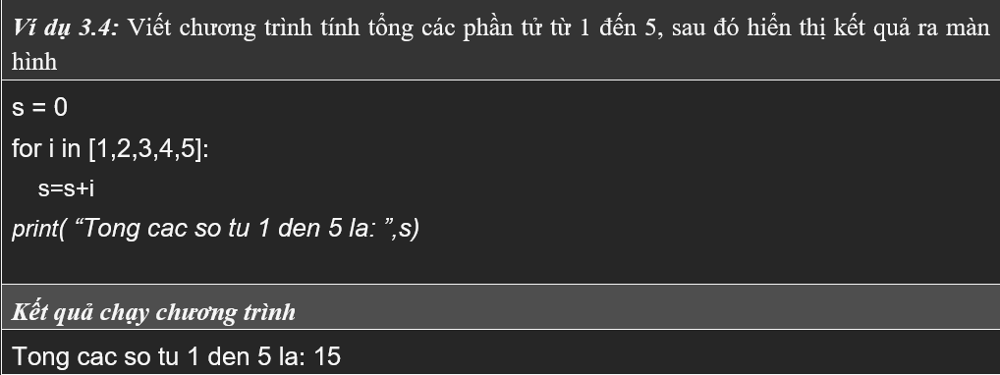
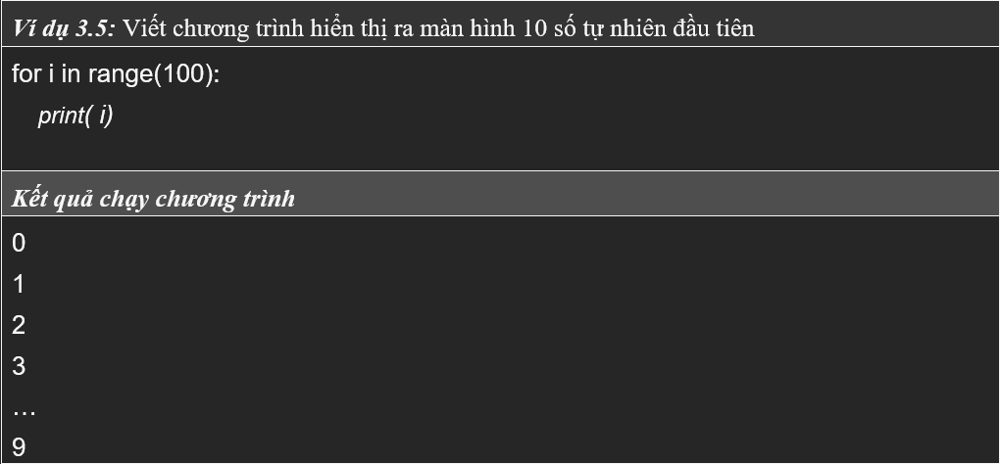

BÀI 3: CÁC CÂU LỆNH ĐIỀU KHIỂN VÀ LỆNH LẶP
3.1.Câu lệnh điều khiển IF
3.1.1 Giới thiệu
Trong bất kì một ngôn ngữ lập trình nào, sẽ đều có câu
lệnh điều kiện. Nhờ câu lệnh này, mà việc ánh xạ những tác vụ được thực
thi khi điều kiện nào đó xảy ra, mới có thể được hiện thực trên máy
tính. Khi chúng ta nói "Nếu trời mưa thì tôi sẽ mang dù", là một ví dụ
cho hành vi mang dù chỉ được thực hiện khi có trời mưa. Trong ngôn ngữ
lập trình, trời mưa được xem là một điều kiện. Khi điều kiện này là
đúng, máy tính sẽ thực hiện một chức năng nào đó, như là việc mang dù
chẳng hạn. Cũng từ bài này, chúng ta chính thức bắt đầu vào khái niệm xử
lý trên máy tính. Những bài toán ngày một phức tạp hơn và cần phải có sự
kết hợp của nhiều câu lệnh phức tạp.
Trong ngôn ngữ lập trình Python, một điều kiện đơn
giản thường được thể hiện qua một phép so sánh. Và một biểu thức so sánh
sẽ trả về kết quả có có kiểu dữ liệu là Boolean, tức là True hay False.
Các toán tử so sánh có thể được kể đến như sau:
So sánh bằng: a == b
Khác nhau: a != b
Bé hơn: a < b
Bé hơn hoặc bằng: a <= b
Lớn hơn: a > b
Lớn hơn hoặc bằng: a >= b
Ở đây a và b là ví dụ cho 2 biến số. Tuy nhiên chúng
ta cũng có thể so sánh giữa một biến số và 1 hằng số, tương tự như những
ngôn ngữ lập trình khác. Ngoài ra, các toán tử luận lý như and và or
cũng có thể sử dụng khi xét điều kiện kết hợp của nhiều mệnh đề luận lí.
Thực ra, câu lệnh điều kiện if có nhiều cách sử dụng
khác nhau, thông qua nhiều biến thể của nó. Trong tài liệu này, chúng
tôi phân ra 3 câu lệnh, bao gồm câu lệnh if đơn giản, câu lệnh if else
và câu lệnh if elif else. Cách sử dụng cũng như ý nghĩa của từng câu
lệnh trong Python lần lượt được trình bày bên dưới
3.1.2 Câu lệnh IF
Đây là câu lệnh đơn giản nhất, có cấu trúc câu lệnh điều kiện như sau:
Cú pháp: if (< điều kiện >):
[khối lệnh if]
Trong đó:
< điều kiện >: Luôn cho kết quả trả về là một trong hai giá trị đúng
(True) hoặc sai (False).
[khối lệnh if]: Bao gồm một hoặc nhiều
lệnh được thực thi khi biểu thức điều kiện đúng, các câu lệnh trong khối
lệnh có lề trái thụt vô một khoảng trắng so với câu lệnh if. Bắt buộc
chúng ta phải có ít nhất một câu lệnh theo sau câu lệnh if, nếu không
chương trình sẽ báo lỗi.
Lưu đồ:
3.1.3 Câu lệnh IF ELSE
Đây là cấu lệnh đơn giản nhất, có cấu trúc câu lệnh điều kiện như sau:
Cú pháp: if (< điều kiện >):
[khối lệnh if]
Trong đó:
< điều kiện >: Luôn cho kết quả trả về là một trong hai giá trị đúng
(True) hoặc sai (False).
[khối lệnh if]: Bao gồm một hoặc nhiều
lệnh là thực thi khi biểu thức điều kiện đúng, các câu lệnh trong khối
lệnh có lề trái thụt vô một khoảng trắng so với câu lệnh if. Bắt buộc
chúng ta phải có nhất một câu lệnh theo sau câu lệnh if, nếu không
chương trình sẽ báo lỗi.
Cú pháp: else:
[khối lệnh else]
Trong đó: [khối lệnh else]: Bao gồm một hoặc nhiều lệnh là thực
thi khi biểu thức điều kiện đúng, các câu lệnh trong khối lệnh có lề
trái thụt vô một khoảng trắng so với câu lệnh if. Bắt buộc chúng ta phải
có nhất một câu lệnh theo sau câu lệnh if, nếu không chương trình sẽ báo
lỗi.
Lưu đồ:
3.1.4 Câu lệnh IF ELIF
Đây là cấu lệnh đơn giản nhất, có cấu trúc câu lệnh điều kiện như sau:
Cú pháp: if (< điều kiện >):
[khối lệnh if]
elif (< điều kiện >):
[khối lệnh elif]
Trong đó:
< điều kiện >: Luôn cho kết quả trả về là một trong hai giá trị đúng
(True) hoặc sai (False).
[khối lệnh if]: Bao gód một hoặc nhiều
lệnh là thực thi khi biểu thức điều kiện đúng, các câu lệnh trong khối
lệnh có lề trái thụt vô một khoảng trắng so với câu lệnh if. Bắt buộc
chúng ta phải có nhất một câu lệnh theo sau câu lệnh if, nếu không
chương trình sẽ báo lỗi.
Cú pháp: elif (< điều kiện >):
[khối lệnh elif]
Trong đó: [khối lệnh elif]: Bao gód một hoặc nhiều lệnh là thực
thi khi biểu thức điều kiện đúng, các câu lệnh trong khối lệnh có lề
trái thụt vô một khoảng trắng so với câu lệnh if. Bắt buộc chúng ta phải
có nhất một câu lệnh theo sau câu lệnh if, nếu không chương trình sẽ báo
lỗi.
Lưu đồ:
Hoạt động: Khi gặp cấu trúc if, elif trong chương trình máy tính thực hiện các bước như sau:
-
Bước 1: Kiểm tra, nếu biểu thức < điều kiện 1 > có giá trị đúng (True) thì thực hiện [khối lệnh 1] và thoát khỏi cấu trúc, ngược lại sang Bước 2
-
Bước 2: Kiểm tra, nếu biểu thức < điều kiện 2 > có giá trị đúng (True) thì thực hiện [khối lệnh 2] và thoát khỏi cấu trúc, ngược lại sang Bước 3
-
Bước 3: Kiểm tra, nếu biểu thức < điều kiện n > có giá trị đúng (True) thì thực hiện [khối lệnh n] và thoát khỏi cấu trúc, ngược lại sang Bước 4
-
Bước 4: Thực hiện [khối lệnh n+1] và thoát khỏi cấu trúc.
Vòng lặp FOR
Câu lệnh for là lệnh lặp với số lần biết trước. Số lần lặp thường được
xác định bởi vùng giá trị của lệnh range(). Cú pháp của lệnh lặp với số
lần biết trước for như sau:
Cú pháp:
for < tên biến > in < tập hợp >:
[khối lệnh]
Trong đó:
< tên biến >: Là tên do người dùng tự đặt
< tập hợp >: Gồm tập các phần tử của một List, Chuỗi, Tuple,…
< khối lệnh_for >: Bao gồm một hoặc nhiều câu lệnh được chạy khi duyệt
qua các phần tử trong tập hợp, các câu lệnh trong khối lệnh có lề trái
dịch vào một khoảng trống so với for
Lưu đồ:
Hoạt động:
-
Bước 1: Kiểm tra xem trong < tập hợp > có còn phần tử chưa được duyệt hay không? Nếu còn (True) thì thực hiện Bước 2; ngược lại (False) sang Bước 5.
-
Bước 2: Lấy ra phần tử đầu tiên chưa được duyệt trong < tập hợp > và gán cho < tên biến >
-
Bước 3: Thực hiện [khối lệnh_for]
-
Bước 4: Quay lên thực hiện tiếp Bước 1
-
Bước 5: Kết thúc câu lệnh lặp for.
Cấu trúc lặp for thường được dùng để thực hiện duyệt qua lần lượt các phần tử trong một tập hợp, danh sách hoặc chuỗi, tương ứng với mỗi phần tử được duyệt, máy tính sẽ thực hiện các lệnh trong cấu trúc lặp một lần. Như vậy số lần các câu lệnh trong thân cấu trúc lặp được thự hiện đúng bằng số phần tử trong tập hợp, danh sách hoặc chuỗi.

Trong ví dụ trên, chúng ta thấy có hàm range(), hàm này được sử dụng để
tạo ra một danh sách, dãy số.
Cú pháp:
range([<
start,]< end > [,< step >])
Trong đó:
-
Hàm range sẽ tạo ra một dãy các phần tử có giá trị từ < start > đến < end >-1 theo bước nhảy giữa các phần tử tạo ra là < step >
-
< start >: Chỉ định phần tử bắt đầu, nếu không có thì mặc định là 0
-
< end >: Chỉ định phần tử kết thúc, bắt buộc phải có phần tử này
-
< step >: Chỉ định bước nhảy giữa hai số < start > và < end >, nếu không có thì mặc định bước nhảy bằng 1